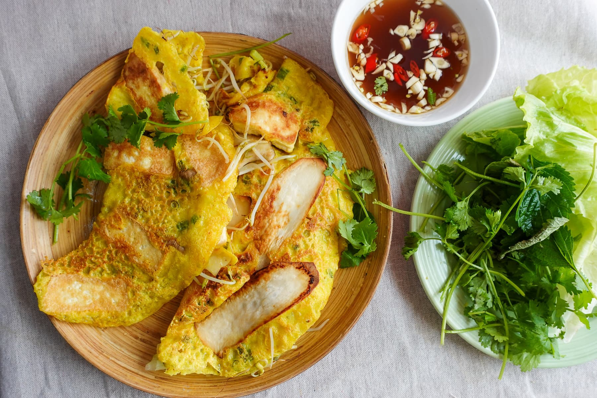

Bánh Xeo Full Recipe  Ingredients for the batter 1 cup rice flour 1 cup coconut milk 1 cup water 1/2 tsp turmeric powder 1/2 tsp salt 2 green onions, thinly sliced Ingredients for the Filling 1/2 lb (225g) pork belly or pork shoulder, thinly sliced 1/2 lb (225g) shrimp, peeled and deveined 2 cups bean sprouts 1 small onion, thinly sliced 1 tsp fish sauce Salt and pepper to taste Ingredients for Nuoc Cham (Dipping sauce) 3 tbsp fish sauce 3 tbsp lime juice 3 tbsp sugar 1/4 cup water 1 garlic clove 1 small chili thinly sliced Directions Make the batter: In a bowl, mix rice flour, coconut milk, water, turmeric powder, and salt until smooth. Stir in the sliced green onions. Let the batter rest for 20-30 minutes. Prepare the filling: Heat a skillet over medium-high heat. Add a little oil and sauté the pork slices until lightly browned. Add shrimp and cook until they turn pink. Season with fish sauce, salt, and pepper. Remove from heat and set aside. Cook the pancakes: Heat a non-stick pan over medium-high heat and add a small amount of oil. Pour a thin layer of batter into the pan, swirling to coat the surface evenly. Add some pork, shrimp, onion slices, and bean sprouts on one half of the pancake. Cover with a lid and cook for about 3-5 minutes, until the edges are crispy and golden. Fold the pancake in half and transfer to a plate. Repeat with the remaining batter and filling. Make the dipping sauce: Combine fish sauce, lime juice, sugar, and water in a bowl. Stir until the sugar dissolves. Add garlic and chili. Serve: Serve the pancakes hot with lettuce, fresh herbs, and dipping sauce on the side. Tear pieces of the pancake, wrap them in lettuce with herbs, and dip in Nuoc Cham